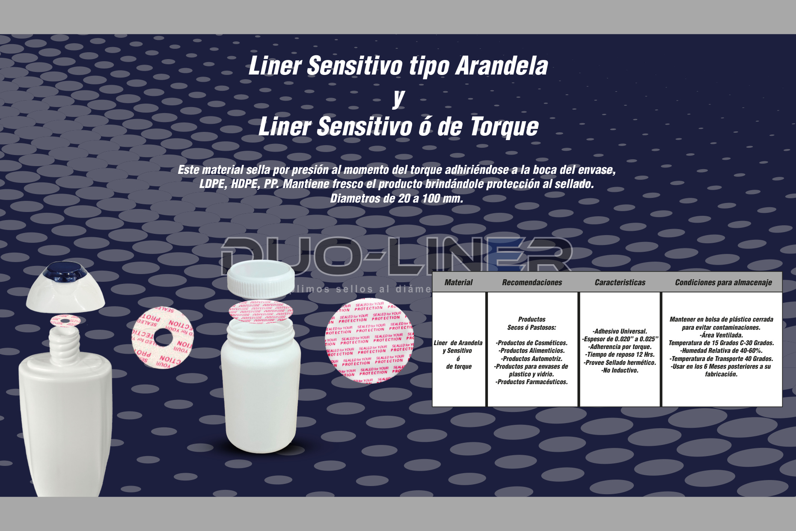

01

Sellado por torque
Liner Sensitivo tipo Arandela y de Torque
Sella por presión al momento del torque, adhiriéndose a la boca del envase.
- Diámetros de 20 a 100 mm
- Productos secos o pastosos
- Envases plásticos y vidrio